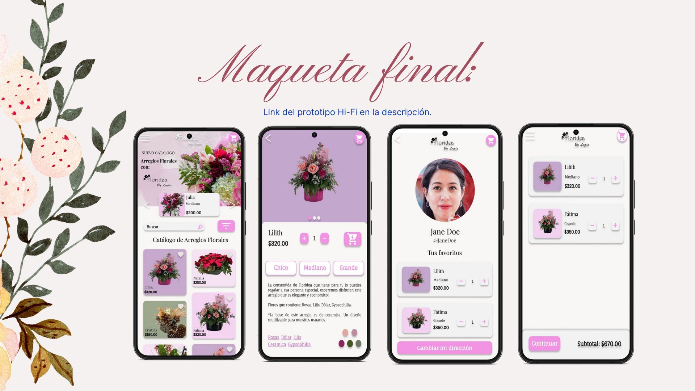

El problema
Floridea requiere el desarrollo de una aplicación móvil que funcione como un catálogo de arreglos florales de última moda.
La meta:
Desarrollar una aplicación móvil de Floridea para ofrecer los arreglos en un entorno moderno y fácil de usar.
Mi rol: |
Público objetivo: |
|
Diseñadora de UX/UI. |
Publico general. |
Mis responsabilidades: |
Duración: |
|
Investigación de usuarios, Encuestas, Personas, Idear. Evaluaciones de usabilidad, Prototipos interactivos Lo-Fi e Hi-Fi, Esquemas de página, Auditorías de competencia. |
Junio 2022 - Diciembre 2022 |
Investigación de usuarios:
Las necesidades y emociones de los usuarios se han dado a conocer mediante una exhaustiva encuesta. En su mayoría, los desafíos más destacados incluyen la dificultad para encontrar arreglos florales de calidad y asequibles, la ausencia de recomendaciones por parte de los floristas y la falta de personalización en la selección de las flores que componen los arreglos. A partir de esta valiosa información, se ha desarrollado una persona que engloba las principales problemáticas identificadas entre nuestros usuarios. Se han formulado planteamientos de problemas con sus correspondientes hipótesis, con el propósito de idear soluciones efectivas. Además, se han concebido propuestas de valor y se ha realizado una exhaustiva auditoria de la competencia, con el fin de comprender a fondo el panorama del mercado de las florerías.
Diseños:
El proceso de diseño se inició mediante la elaboración de bocetos de páginas en formato papel. Se seleccionaron las versiones más prometedoras para dar lugar a una versión atractiva y de sencilla navegación. Posteriormente, se desarrollaron los wireframes digitales.


Estudio de usabilidad:
Se llevó a cabo un estudio de usabilidad con la participación de cinco usuarios de manera no moderada y en modalidad remota. A partir de este proceso, se han derivado seis conclusiones significativas:
- Pantalla de confirmación de datos.
- Agregar direcciones del usuario.
- Agregar métodos de pago.
- Agregar uso de cupones.
- Poner el proceso actual del pedido.
- Agregar reseña del producto o del servicio.

Maquetas y prototipo de alta fidelidad:
Con base en los resultados obtenidos del estudio de usabilidad, se realizaron ajustes y mejoras significativas, incorporando diversos detalles, lo que culminó en la creación de las maquetas finales. Les invito a visualizar el prototipo de alta fidelidad en el siguiente enlace:
Prototipo de alta fidelidad Floridea Enlace Estudio de Caso Floridea en Behance
Conclusiones y próximos pasos:
Se ha adquirido el conocimiento de que comprender las necesidades y preferencias del usuario es fundamental para ofrecer soluciones de diseño acertadas. Además, se ha reforzado la importancia de tomar en cuenta a una audiencia diversa y valorar el feedback como un elemento crucial para la mejora continua del proyecto de diseño.
"Me gusta lo sencillo que es escoger el arreglo a mi presupuesto"
Para próximos pasos se tiene en cuenta las siguientes consideraciones:
- Ejecutar un sistema de reseñas y testimonios de los productos de Floridea.
- Agregar una opción que dependiendo de tu presupuesto y gustos te lo recomendará una Florista de Floridea.
- Implementar sistema de suscripciones semanales, quincenales y mensuales de arreglos florales a la dirección del usuario.